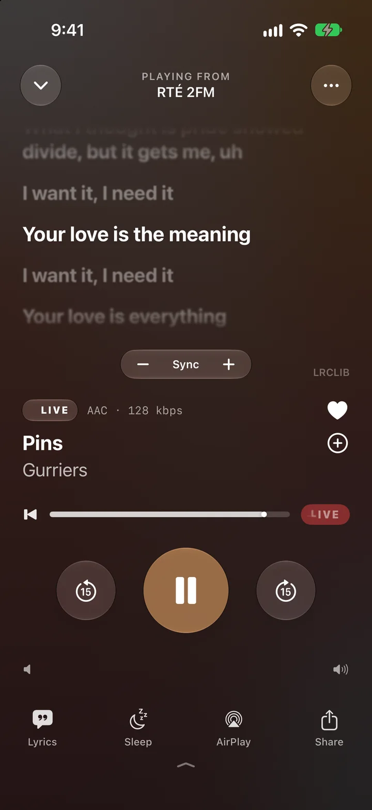
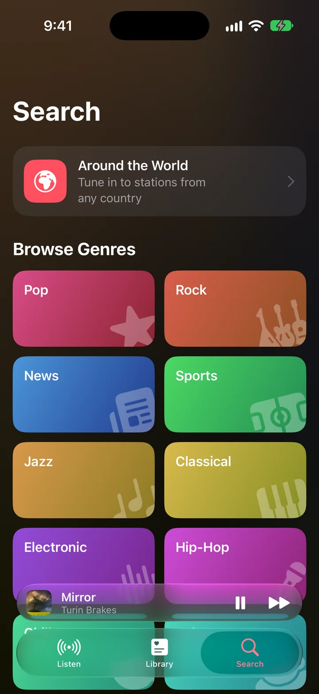
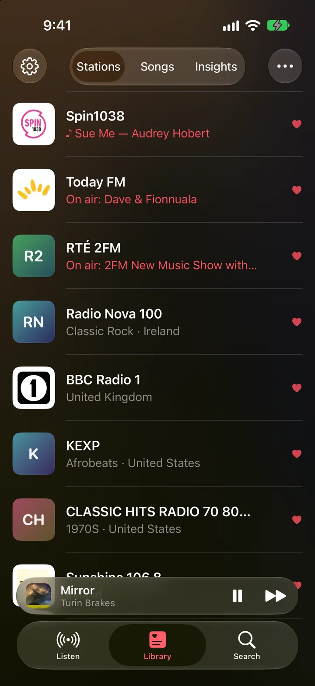
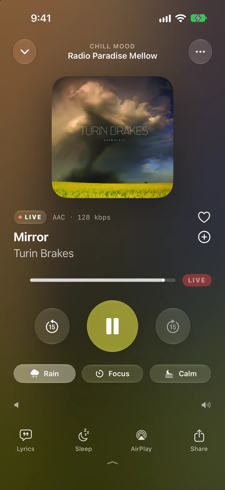
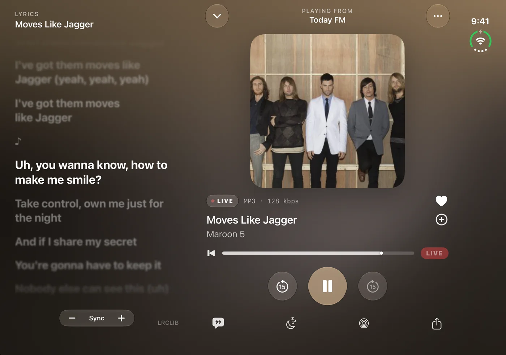
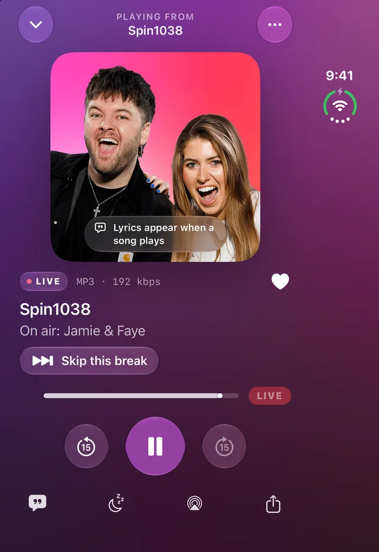
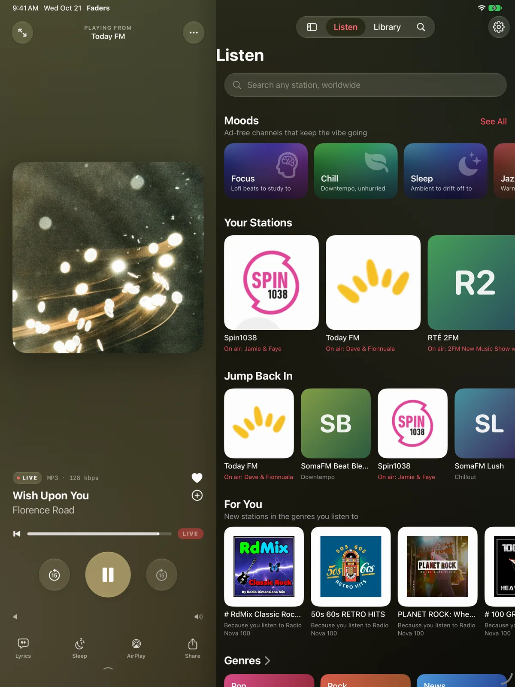
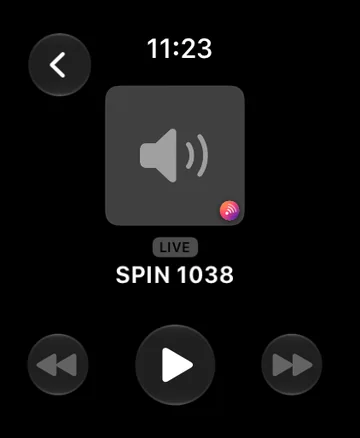

SPIN 1038BBC Radio 1Today FMKEXPRTÉ 2FMRadio ParadiseNTSSomaFMRadio NovaFM10498FMClassic HitsSPIN 1038BBC Radio 1Today FMKEXPRTÉ 2FMRadio ParadiseNTSSomaFMRadio NovaFM10498FMClassic Hits
The film
Thirty seconds of radio, the way it should feel.



Every song, named
Know the song. Before the DJ tells you.
Faders reads what each station sends, and when a station stays quiet it listens for a few seconds and names the song itself. Title, artist and album art, on almost any station in the world.
Sing along
Lyrics that keep time with live radio.
Synced lyrics follow the song as it plays on air, line by line. A gentle nudge fixes a station that runs a little early or late, and Faders remembers it.
Turn the dial, find the night
Every city has a light
Somewhere someone plays our song
Static fades and we sing along
Turn it up, the signal’s strong
Every station on Earth
Tens of thousands of stations. One search.
Search by name or frequency, browse genres in the languages you speak, or go country by country. Your local stations come first.
Your stations
Favourites that know what’s on now.
See the song or show playing on every favourite before you tap. Synced through iCloud to iPad, Apple Watch and CarPlay.
Ad-free moods
Pick a feeling. Faders keeps it going.
Hand-picked, listener-supported stations with no ads, and if one ever drifts off-mood, Faders moves on by itself.
◐
Focus
Lofi beats to study to
❋
Chill
Downtempo, unhurried
☾
Sleep
Ambient to drift off to
♪
Jazz Café
Warm, late-night jazz
⚡︎
Energy
Upbeat, no chatter
◎
Retro
Eighties and beyond

Add the weather.
Lay rain, a crackling fire, vinyl or waves under any mood, synthesised right on your iPhone. Start a focus timer, or switch to Calm for a quiet bedside clock.
Rain
Fire
Vinyl
Waves
Focus timer
Calm mode
Made for iPhone Duo
Closed, it’s a radio. Open, it’s a stage.
Faders keeps your place as you unfold: the player moves to one page, lyrics or your stations to the other. Nothing lands in the fold.


Closed: song, artwork and lyrics.Open: lyrics beside the player.
Closed
The full player on the outer display, controls in easy reach.
Book
Player on one page, lyrics or stations on the other.
Stand
Artwork up top, controls on the base. A bedside radio clock.
Flat
Your stations across the whole screen, the player a tap away.
Everywhere you listen
One radio. Every screen you own.
iPad
The player sits right beside your stations.


Apple Watch
Your favourites on your wrist.
CarPlay
Stations and what’s on now, safely on the dash.
Siri and Shortcuts
“Play SPIN 1038 on Faders.” “Play Focus on Faders.”
Rewind live radio
Missed the start? Go back up to 30 minutes, or restart the song with one tap.
LIVE
Private by design
Data Not Collected.
No account. No analytics. No tracking. Your stations and history stay on your device and in your own iCloud. That’s what the App Store privacy label says, and it’s true.
Pricing
Radio is free. Forever.
Faders Plus is one payment, no subscription. It adds the extras and keeps Faders independent.
Faders
Free
Every station, search and favourites
Song names, artwork and synced lyrics
All six ad-free Moods
CarPlay, Apple Watch, iPad, iPhone Duo
Sleep timer, AirPlay, Siri, widgets
Faders Plus
€4.99 one time
Launch price, going up to €9.99 on 1 December.
Rewind live radio, restart any song
Wake to Radio alarms
Sounds, Focus timer and Calm mode
Save songs to Apple Music
Listening Insights
Shared with your family; future extras included
Turn it on.
Faders for iPhone, iPad, iPhone Duo and Apple Watch.